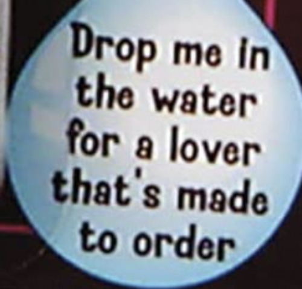
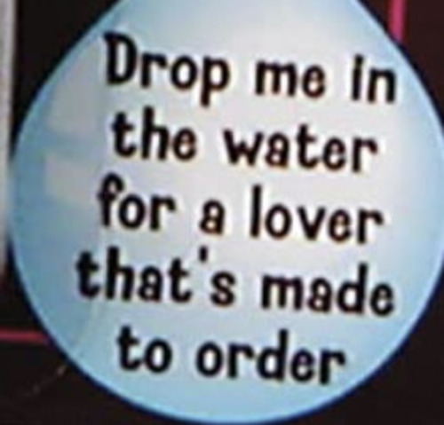

Chicken Nugget Keychain
I'm lovin it!We can liken the invention of the chicken nugget keychain to that of newton’s discovery of gravity, a sleeping genius with eyes closed and mind shut to the world wakes up to a jolt! In this case, a million-dollar idea that will cast your family forward on the social ladder and maintain your legacy for generations to come… they rush out of bed to begin designing and building what ultimately becomes this beautiful keychain.
From concept to product is the next step, hours, nay, months spent finding the perfect nugget to mold its shape, paints tested, ideas scrapped, rebuilds, new tests and viola! We have the chicken nugget keychain that we have today, a perfect product for children and adults alike, crafted with polyvinyl chloride ensuring that unlike real nuggets these will truly stand the test of time!
And as an added bonus, no chickens were harmed in the creation of this product.
Chicken Nugget Keychain on Amazon

 
